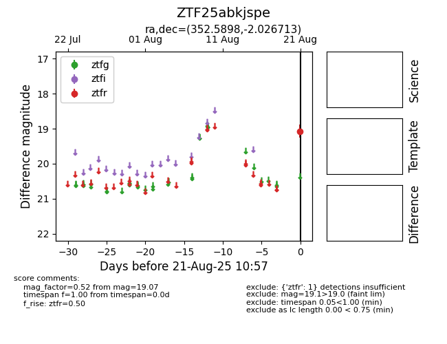

Target ZTF25abkjspe at 2025-08-21 10:57, see:
FINK: fink-portal.org/ZTF25abkjspe
Lasair: lasair-ztf.lsst.ac.uk/objects/ZTF25abkjspe
ALeRCE: alerce.online/object/ZTF25abkjspe
alt names
ZTF25abkjspe (ztf,alerce)
coordinates:
equatorial (ra, dec) = (352.5898,-2.02671)
galactic (l, b) = (81.7690,-58.26359)
photometry
last ztfr=19.07
1 ztfr detections
